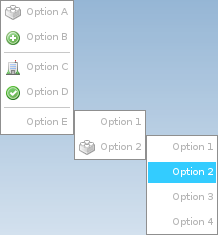

Löve Frames - The Menu Object
Return to Index
Information
The menu object functions similarly to context menus in Windows.
A menu can have multiple options with icons and an infinite amount submenus.
Example Use
local submenu3 = loveframes.Create("menu")
submenu3:AddOption("Option 1", false, function() end)
submenu3:AddOption("Option 2", false, function() end)
local submenu2 = loveframes.Create("menu")
submenu2:AddOption("Option 1", false, function() end)
submenu2:AddOption("Option 2", false, function() end)
submenu2:AddOption("Option 3", false, function() end)
submenu2:AddOption("Option 4", false, function() end)
local submenu1 = loveframes.Create("menu")
submenu1:AddSubMenu("Option 1", false, submenu3)
submenu1:AddSubMenu("Option 2", "resources/images/brick.png", submenu2)
local menu = loveframes.Create("menu")
menu:AddOption("Option A", "resources/images/brick.png", function() end)
menu:AddOption("Option B", "resources/images/add.png", function() end)
menu:AddDivider()
menu:AddOption("Option C", "resources/images/building.png", function() end)
menu:AddOption("Option D", "resources/images/accept.png", function() end)
menu:AddDivider()
menu:AddSubMenu("Option E", false, submenu1)
menu:SetPos(x, y)

Event Callbacks
The menu object has no unique event callbacks.
Methods
AddOption - Adds an option to the object
- Returns 1 value: base_menu [object]
object:AddOption(text[string], icon[string or userdata], func[function])RemoveOption - Removes an option from the object
object:RemoveOption(id[number])AddSubMenu - Adds a submenu to the object
object:AddSubMenu(text[string], icon[string or userdata], menu[object])AddDivider - Adds a divider to the object
object:AddDivider()GetBaseMenu - Gets the object's base menu
- Returns 1 value: base_menu [object]
local base_menu = object:GetBaseMenu()